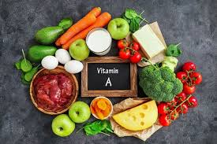
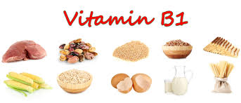
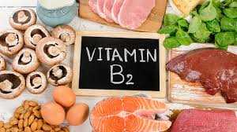
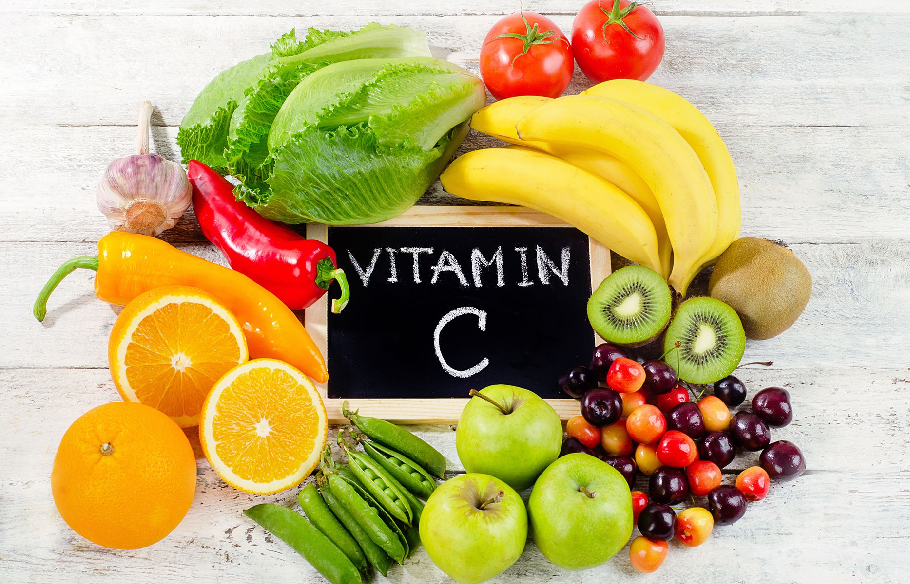
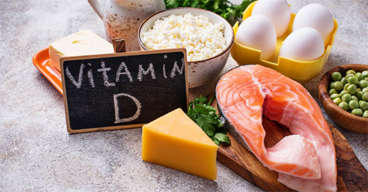
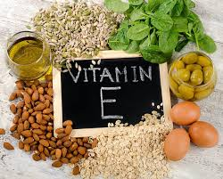
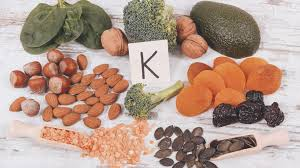

Vitaminok
A-vitamin

Funkciója:
- növekedés
- szürkületi látás
- a szaruhártya egészsége
- fertőzéssel szembeni ellenállás
- Hiánya fejlődési zavarokat farkasvakságot a bőr szárazságát okozza
Forrásai:
- tejtermékek
- halmájolajak
- tojássárgája
- a sárgarépában és zöldségfélékben található karotint a szervezet A-vitaminná alakítja
B1-vitamin

Funkciója:
- szénhidrát anyagcsere: az idegrendszer működése
- Hiánya vizenyősödést vagy végzetes fogyással járó beriberit okoz
Forrásai:
- élesztő
- tojássárgája
- máj
- búzacsíra
- borsó
- bab

Funkciója:
- szövetlégzés
- Hiánya a nyelv és az ajak gyulladását okozza
Forrásai:
- élesztő
- élesztő- és húskivonatok
- tej
- máj
- sajt
- tojás
- zöldségfélék
Funkciója:
- vérképződés
- Hiánya vészes vérzékeny¬séget okoz
Forrásai:
- élesztő
- hús
- máj
- vese
- tej
- sajt
- tojás
- zöldségfélék

Funkciója:
- energiatermelés
- anyagcserefolya¬matok
- fertőzéssel szembeni ellenállás
- Hiánya skorbutot , vérzékenységet, fáradékonyságot okoz
Forrásai:
- paprika
- citrom
- zöldségek
- gyümölcsök

Funkciója:
- csontok egészséges fejlődése.
- Hiánya a csontok görbülését, törékenységét, csontlágyulást okoz
Forrásai:
- vaj
- halmájolaj
- a növényi olajokban található előanyagot a szervezet alakítja D-vitaminná napsugárzás hatására

Funkciója:
- az idegrendszer, az izomzat és a here normális működéséhez illetve a terhesség ki¬hordásához fontos
- Hiánya nem jellemző
Forrásai:
- növényi magvak és olajok
- saláták
- zöldfőzelékek
- tej
- vaj

Funkciója:
- megfelelő májműködés
- Hiánya nem jellemző
Forrásai:
- bélbaktériumok termelik
- külső bevitele általában nem szükséges